Douglas Stuehler
I am a post baccalaureate molecular biologist trained in computational biology. My research is driven to uncover and understand the plasticity of genetic information which creates such immense yet controlled diversity. This page showcases research on insects, plants, stingrays, bacteria, and viruses.
My current position as a DOE ORISE scholar consists of designing bioinformatic pipelines for research in vector biology and population genetics. My work is supported by a devotion to reduce ambiguity and set biologically informed standards in bioinformatic research. ORISE Success Story
I am currently a research scholar of Bioinformatics, Genomics, and Molecular Biology in the USDA-ARS Heck lab at Cornell University, Ithaca. I earned my BS in Molecular biology with a minor in Chemistry in 2021 from the University of Illinois Urbana-Champaign. The major focus of my current research entails finding chinks in the armor of the Huanglongbing tritrophic pathosystem consisting of pathogen Candidatus Liberibacter asiaticus (CLas), vector Diaphorina citri, and host citrus species.
Huanglongbing (HLB)
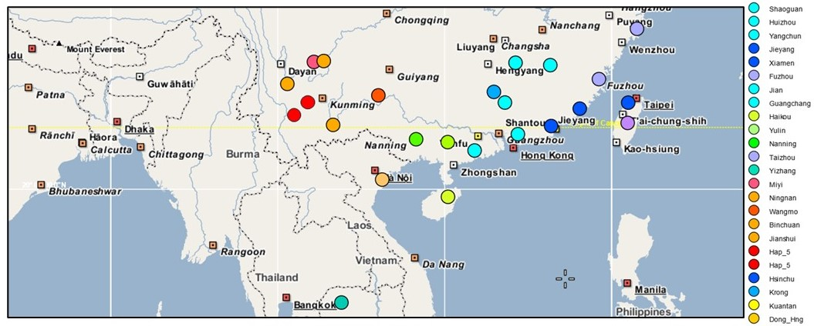
The Asian citrus psyllid, Diaphorina citri, is an insect pest known to vector "Candidatus Liberibacter asiaticus" (CLas), the bacterium responsible for Huanglongbing (HLB). I have explored metageomic, transcriptomic, proteomic, and sRNA datasets to identify therapeutic targets and discern populations genetics.
Genetics and Genomics of Diaphorina citri
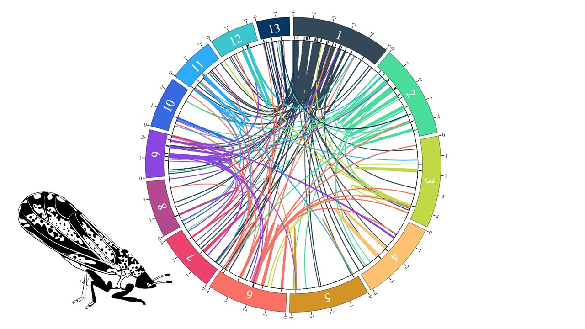
I am currently performing a GWAS to examine vector compentecy of D. citri from four populations, the first study of its kind examining vector competency besides research performed with mosquitos. The ability to acquire and transmit CLas was previously characterized as a heritable trait here. We attempt to uncover the genetics driving this phenomena.
Genetics and Genomics of Candidatus Liberibacter asiaticus

In handling CLas genomes I have performed associative analytics with D. citri endosymbionts, strain tracking, and effector characterization. I have worked on protocols to enrich for non-eukayotic DNA allowing for deepened sequencing of microbial communities from individual insects. CLas-enriched DNA sequencing paired with strain tracking and high quality SNP analysis will help to trace any outbreaks of antibiotic resistant CLas strains.
Transcriptomics of Leuronota fagarae
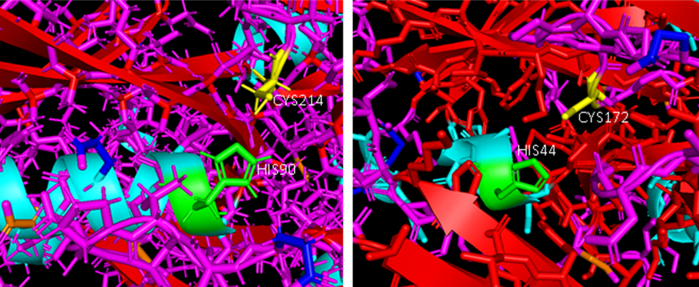
My first project with the USDA-ARS was to characterize a novel picorna-like virus in L. fagarae, a closely related psyllid of D. citri. The use of virus capsid architecture to deliver siRNAs is efficient and the identification of a new virus solidifies the picorna-like virus as a well established infector of psyllids in Florida.
D.S. Stuehler Jr, W.B. Hunter, Y. Carrillo-Tarazona, H. Espitia, J.M. Cicero, T. Bell, H.R. Mann, S.V. Clarke, T.M. Paris, J.L. Metz, T. D'Elia, J.A. Qureshi, L.M. Cano. Wild lime psyllid Leuronota fagarae Burckhardt (Hemiptera: Psylloidea) picorna-like virus full genome annotation and classification. J Invertebr Pathol. 2023 Nov;201:107995. doi: 10.1016/j.jip.2023.107995. Epub 2023 Sep 23. PMID: 37748676 Journal of Invertebrate Pathology
D.S. Stuehler Jr, W.B. Hunter, Y. Carrillo-Tarazona, H. Espitia, J.M. Cicero, T. Bell, H.R. Mann, S.V. Clarke, T.M. Paris, J.L. Metz, T. D'Elia, J.A. Qureshi, L.M. Cano. Picorna-Like Virus Discovered in Wild Lime Psyllid Leuronota fagarae Burckhardt (Hemiptera: Psylloidea), in Proceedings of the 1st International Electronic Conference on Entomology, 1–15 July 2021, MDPI: Basel, Switzerland, doi:10.3390/IECE-10365 sciforum
Genetics of Agrobacterium and Symbiont Technology
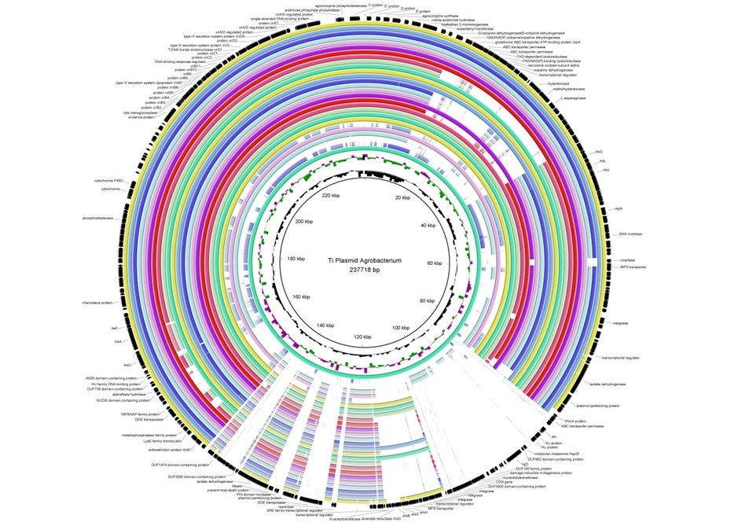
My research of crown gall inducing Agrobacterium species was used to identify putitve genes facilitating gall formation. As part of an ARSX team I further identified Agrobacterium strains and what potential genes would be required to create N2 fixing symbionts, transfected plant tissue supplying nitrogen to plants.
Transcriptomics of Mandarin genotypes and HLB tolerance
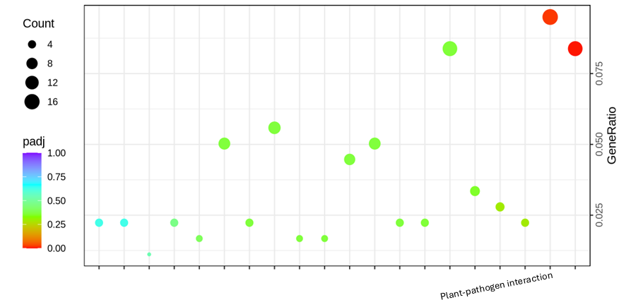
The first differential gene expression study I performed examined the gene response of two HLB tolerant and two HLB susceptible mandarin genotypes to CLas infection. The genes found to be associated with HLB tolerance and susceptibility have helped to broaden our understanding of plant immunity and effector biology.
Mantabodies - Stingray Nanobodies
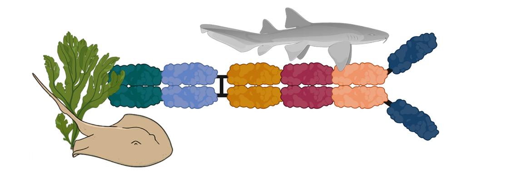
One of my favorite projects is involved with the immune system of stingrays in collaboration with the winners of the 2022 ARSX competition. My part in the project was to assemble and annotate the genomes of the Atlantic and Southern stingrays in order to characterized germline IgNAR loci. As a single domain heavy chain antibody, the IgNAR and its variable region (VNAR) showcases a highly adaptable, stable, and nimble therapeutic molecule. We look to characterize the genetics behind this antibody and explore its use in plants, to bolster their immune systems and fight off foreign pathogens.
Cotton Virology
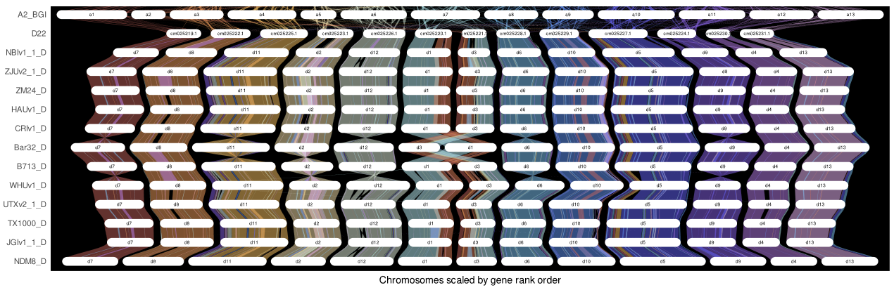
One of the most complicated genomes I have worked with is that of Gossypium hirsutum, an allopolyploid species contributing to at least 90% of cotton production worldwide. Members of the Heck laboratory classified an undiscovered DNA virus, cotton virus A (CotV-A), which now has endogenous sequence identified in many commerical and wild cotton species. My role for this project was to perform chromosomal synteny analysis of G. hirsutum varieties, pathway enrichment analysis of genes surrounding sites of CotV-A integration in G. hirsutum varities, and to classify the aphid transmission factor (ATF) and the virion-associated protein (VAP) through structural analysis.
M. West-Ortiz, D. Stuehler, E. Pollock, J. R. Wilson, S. Preising, A. Larrea-Sarmiento, O. Alabi, M. Fuchs, M. Heck, A. Olmedo-Velarde. Characterization of cotton virus A, a novel and distinct member of the genus Caulimovirus with endogenous viral elements in Gossypium spp. bioRxiv 2023.06.14.544975; doi: https://doi.org/10.1101/2023.06.14.544975 bioRxiv preprint
Insect Antiviral Immunity
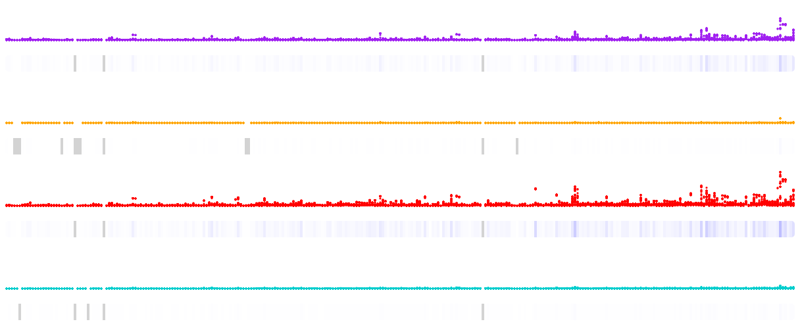
Viral modulation of host insect sRNA response is a well documented phenomema in entomology, however to the extent at which this modulation is related to other pathogens (viruses and bacteria) within the host insect is still not clearly understood. Our study of insect sRNA responses to viral infection in Myzus persicae and Diaphorina citri has revealed an evolutionarily conserved ability of circulative plant pathogens to regulate antiviral immunity in hemipteran vectors. In both hosts sRNA production against Flaviviruses was nearly abolished when hosts were infected with pathogens CLas (D. citri) and PLRV (M. persicae). This finding opens a new line of research into how insect-specific viruses influence transmission of circulative pathogens.
A. Larrea-Sarmiento, A. Olmedo-Velarde, M. West-Ortiz, D. Stuehler, S. Hosseinzadeh, A. Coleman, S. Preising, G. Parker, Z. Fei, M. Heck. Viral and bacterial plant pathogens suppress antiviral defense against flaviviruses in their insect vectors. bioRxiv 2024.08.15.608128; doi: https://doi.org/10.1101/2024.08.15.608128 bioRxiv preprint
Field Work
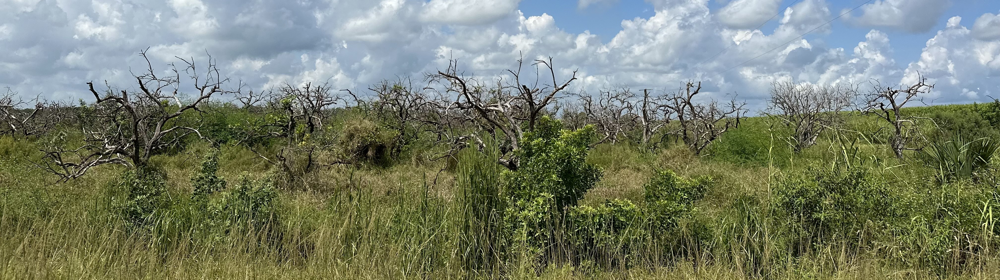
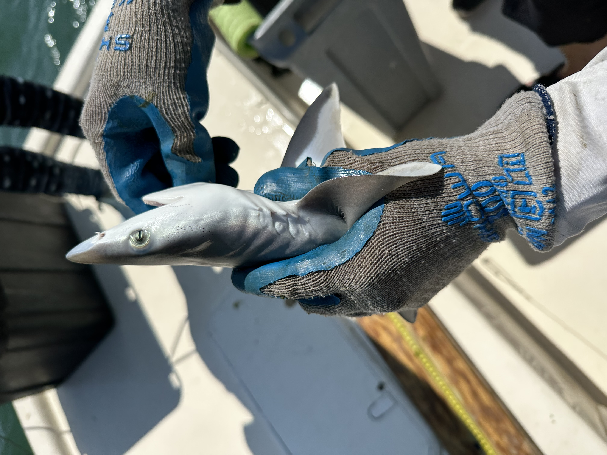
Caught and released Atantic sharpnose while sampling for stingrays.
Video credit: Dr. Michelle Heck
The field work I have performed around southeast Florida consisted of sample collection for nucleic acid extraction and drilling/injecting trees with therapeutics as part of the Grove-First Approach. Additionally, in conjunction with Harbor Branch Oceanographic, I assisted the team with long-line and seine fishing to collect stingrays for blood extractions.
Mentoring
Boyce Thompson Institute, Cornell University, REU Summer Internship mentor (Summer 2024)
Mentored an undergraduate student on the analysis of sRNA transcriptomics; examining the sRNA response of Myzus persicae to synergistic PLRV infection.
Dissemination of Research
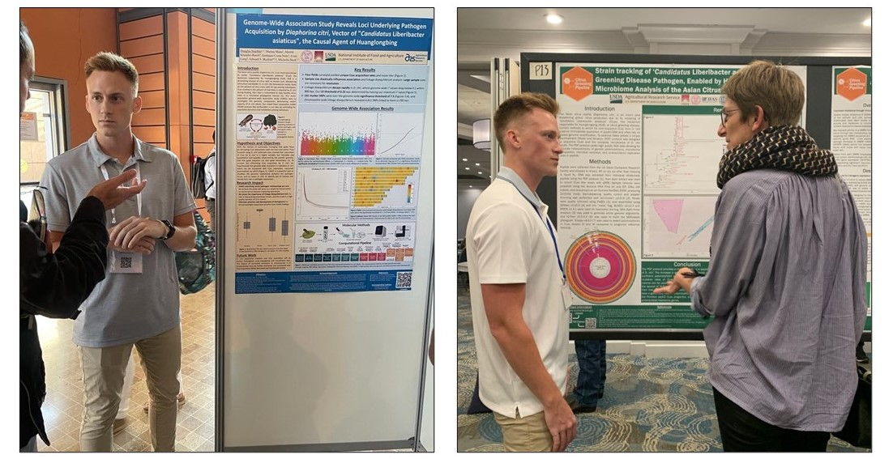
1st International Electronic Conference on Entomology (July 2021)
Poster presentation - Presented the phylogenetic classification of a picorna-like virus discovered in the wild lime psyllid, Leuronota fagarae, and how this virus is related to a PLV with high viral persistence in Diaphorina citri.
FDA-NIH-NIST-USDA Joint Agency Microbiome (JAM) Virtual Symposium (August 2021)
Poster presentation - Comparing the transcriptome of the wild lime psyllid microbiome to the transcriptome of the Asian citrus psyllid microbiome.
Invited talk at the University of Florida Plant Pathology Spring Seminar Series (January 2022)
Speaker - Presented research on the picorna-like virus discovered in Leuronota fagarae to UF-Gainesville Plant Pathology Department as a visiting scholar at the Plant Pathology Spring Seminar Series.
The International Society for Citrus HLB and Phloem-Colonizing Bacterial Pathosystems (October 2022)
Poster presentation - Strain tracking of ‘Candidatus Liberibacter asiaticus’, Citrus Greening Disease Pathogen, Enabled by High-Resolution Microbiome Analysis of the Asian Citrus Psyllid.
12th International Congress of Plant Pathology (August 2023)
Poster presentation - Genome-Wide Association Study Reveals Loci Underlying Pathogen Acquisition by Diaphorina citri, Vector of "Candidatus Liberibacter asiaticus", the Causal Agent of Huanglongbing.
Presentation to Citrus Research Board (CRB) (January 2024)
Speaker - CLas strain tracking and mtDNA haplotyping of D. citri to facilitate collaboration of California and Florida.
Presentation to NIFA grant stakeholder advisory committee (January 2024)
Speaker - IgNAR antibody (Mantabody) identification and classification in Hypanus sabinus and Hypanus americanus.
International Research Conference on Huanglongbing VII (March 2024)
Poster presentation - Genome-Wide Association Study Reveals Loci Underlying Vector Competency by Diaphorina citri, Vector of "Candidatus Liberibacter asiaticus", the Causal Agent of Huanglongbing.
(Upcoming) Entomological Society of America (November 2024)
Speaker - Genome-wide association and population genetics of Diaphorina citri: examining genetics underlying vector capacity of the Huanglongbing insect vector.